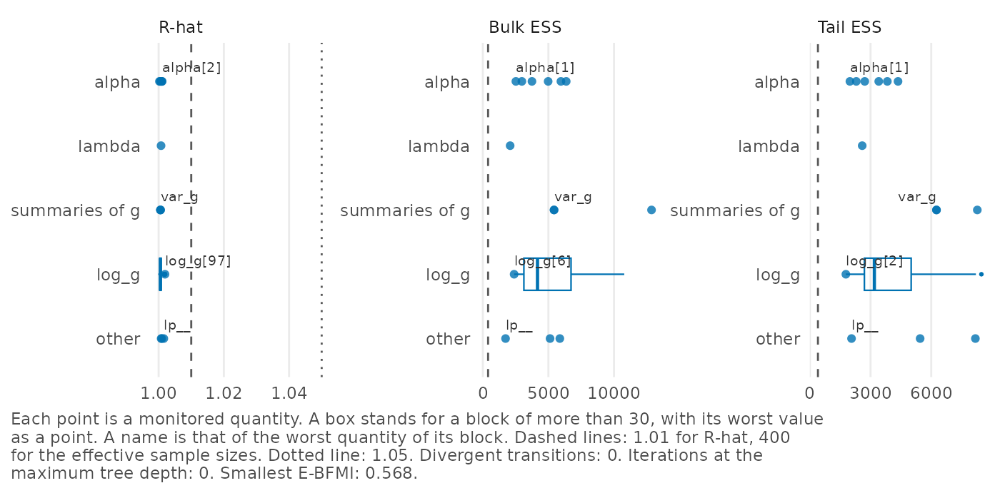
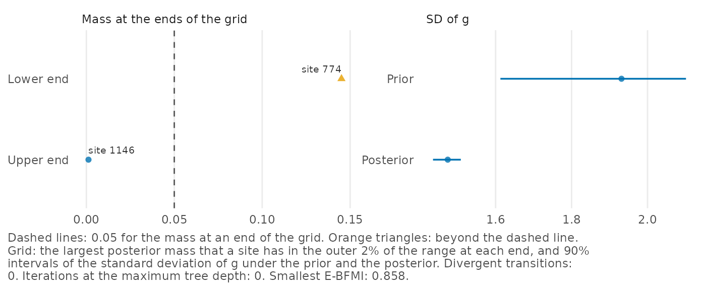
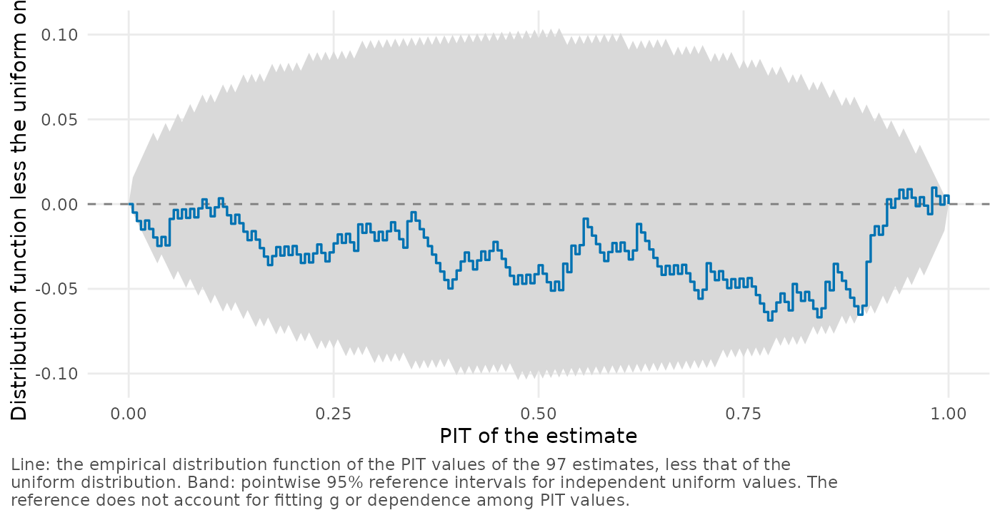
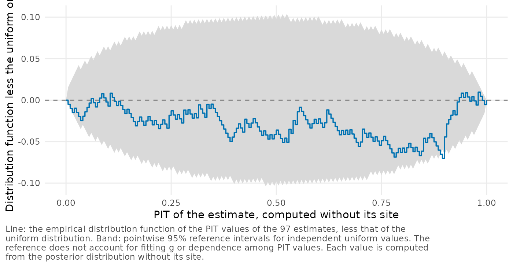
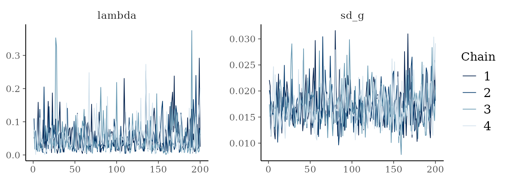

This vignette explains how to check a fit before you use its results.
We start with diagnose(), which reports in a few lines on
whether the sampler did its work and whether the results depend on where
the grid ends. We then check whether the fitted model describes the
estimates it was given. That takes a plot and some judgment. The last
section covers what to do about a warning.
The reason to check first is that every number a fit reports is computed from the draws of a Markov chain. The numbers describe the posterior distribution only if the chains have reached that distribution and have moved through it often enough. You cannot tell from the results whether they have, because a fit that has not converged prints a table of estimates that looks like any other. The diagnostics are the evidence on that point, so read them before the estimates.
Running diagnose()
We use krw_fit as the main example. It is a fit that
comes with the package: the model for the callback gaps at 97 firms from
vignette("bayesEfron"), fitted with the default grid and
the default sampler settings. We pass it to diagnose().
fit <- krw_fit
diag <- diagnose(fit)
diag
#> <bef_diagnostic>
#> Model family: RE
#> Rhat max: 1.002 (log_g[97])
#> ESS bulk min: 1731 (lp__)
#> ESS tail min: 1780 (log_g[2])
#> Divergences: 0
#> Max treedepth hits: 0
#> E-BFMI min: 0.5682
#> Runtime: 0.7197 sec
#> Grid:
#> lower end -0.0829: at most 0% of a site's posterior in the outer 2% (site "Safeway")
#> upper end 0.1585: at most 0.1% of a site's posterior in the outer 2% (site "Genuine Parts (Napa Auto)")
#> sd of g: posterior 0.01716 (0.01183 to 0.02396); prior 0.06991 (0.05814 to 0.07644)
#> the central 99.9% of g spans 98% of the grid
#> Effective params: mean 46.67; sd 6.378diagnose() does not run the sampler again. It collects
what bayes_efron_fit() computed when the model was fitted.
Each printed line gives the worst value of a diagnostic, with the
quantity or the site that it belongs to in parentheses, or a total count
for the divergent transitions and the iterations at the maximum tree
depth. The six lines from Rhat max to
E-BFMI min are the sampler diagnostics, and the lines under
Grid are the grid diagnostics, where “end” means the lower
or the upper limit of the grid. The remaining lines
(Model family, Runtime and
Effective params) repeat information from the fit.
To see the outcome of each check, convert the result to a data frame, which has one row for each check with its threshold and its status.
as.data.frame(diag)[, c("diagnostic", "threshold", "rule", "status")]
#> diagnostic threshold rule status
#> 1 rhat 1.01 at most ok
#> 2 ess_bulk 400.00 at least ok
#> 3 ess_tail 400.00 at least ok
#> 4 divergences 0.00 at most ok
#> 5 max_treedepth 0.00 at most ok
#> 6 ebfmi 0.30 at least ok
#> 7 grid_ends 0.05 at most okThe rule column gives the direction of the comparison:
R-hat, for example, should be at most 1.01. Every check has the status
"ok".
The result is a list, and three of its elements name the diagnostics that need attention:
-
sampler_diagnostics_failed, those that fail a check -
sampler_diagnostics_warned, those that get a warning -
diagnostic_skipped, those that could not be computed or were not compared with their thresholds
All three are empty here.
lengths(diag[c("sampler_diagnostics_failed", "sampler_diagnostics_warned",
"diagnostic_skipped")])
#> sampler_diagnostics_failed sampler_diagnostics_warned
#> 0 0
#> diagnostic_skipped
#> 0You will learn about a failed check even if you never call
diagnose(), because bayes_efron_fit() also
issues a warning about it when it returns.
The six sampler diagnostics
The model is fitted with the No-U-Turn sampler (NUTS) of Hoffman and Gelman (2014). This sampler moves through the posterior distribution in a sequence of small steps, with a step size that it sets during warmup, and each iteration is a path of many steps. R-hat and the two effective sample sizes describe the draws that result. The other three diagnostics describe the paths.
R-hat compares the chains with one another. If they have all settled
on the same distribution, the variation between chains is no larger than
the variation within them, and R-hat is close to 1. The effective sample
size (ESS) is the number of independent draws that the correlated draws
of the chains are worth. The bulk ESS concerns the center of the
distribution, and with it the posterior means, whereas the tail ESS
concerns the 5% and 95% quantiles, and with them the intervals. Vehtari et al. (2021) recommend that the draws be
used only if, for every quantity, R-hat is below 1.01 and both effective
sample sizes are at least 400 when 4 chains are run.
diagnose() lists a warning when a value falls short of
these recommendations, and it counts an R-hat above 1.05 as a failed
check.
A divergent transition, or divergence, means that the sampler met a
region of the posterior distribution that it could not follow with the
step size it had chosen. The draws may then miss part of the
distribution, so even one divergent transition is a failed check. An
iteration reaches the maximum tree depth when its path is cut short at
the greatest length that max_treedepth allows. That makes
the sampler less efficient, which shows in the effective sample sizes,
but it does not bias the draws, so it is listed as a warning. The energy
Bayesian fraction of missing information (E-BFMI) is computed for each
chain and is low when the chain moves slowly between the high and the
low levels of the log density. A warning is listed below 0.3, the value
below which cmdstanr prints a message of its own.
R-hat and the effective sample sizes are computed for every quantity in the draws. For these data a default fit stores 114 quantities:
- the log density
lp__ - the 6 spline coefficients
alpha - the parameter
lambda, which sets how strongly those coefficients are held toward zero - the logarithm of \(g\) at each of
the 101 grid points,
log_g - five quantities computed from those, among them the mean and the standard deviation of \(g\)
Here we print R-hat and the effective sample sizes for six of them.
shown <- c("lambda", "mean_g", "sd_g", "log_g[1]", "log_g[51]", "log_g[101]")
data.frame(rhat = round(diag$rhat[shown], 3),
ess_bulk = round(diag$ess_bulk[shown]),
ess_tail = round(diag$ess_tail[shown]))
#> rhat ess_bulk ess_tail
#> lambda 1.001 2082 2588
#> mean_g 1.001 12864 8277
#> sd_g 1.001 5430 6259
#> log_g[1] 1.001 2600 1806
#> log_g[51] 1.000 6521 6003
#> log_g[101] 1.002 3874 2921A site’s effect is not among the stored quantities. What a default
fit reports about a site is computed from the draws of \(g\), so the checks of log_g at
the grid points are the ones that matter for the sites. A fit made with
site_draws = TRUE also stores draws for each site, and they
are checked with the rest.
For the firms the largest R-hat is 1.002, the smallest bulk and tail effective sample sizes are 1,731 and 1,780, there are no divergent transitions, no iteration reaches the maximum tree depth, and the smallest E-BFMI is 0.57. All six diagnostics pass.
R-hat can also be NA or infinite. It is NA
for a quantity that has the same value in every draw, which is not a
sign of trouble. A quantity that stays at one value within each chain,
but at different values in different chains, has an infinite R-hat, and
diagnose() counts that as a failed check because the chains
have not mixed at all. See ?diagnose for the details. If
the whole run has fewer than 400 draws, R-hat and the effective sample
sizes are returned but not compared with their thresholds, and
diagnostic_skipped names the checks that were left out.
Plotting the sampler diagnostics
plot_diagnostics() shows R-hat and the effective sample
sizes of all the quantities at once, so you can tell whether a poor
value is one of a kind or one of many. We select the panels for the
sampler with what.
plot_diagnostics(fit, what = c("rhat", "ess"))
The quantities are grouped in blocks. A block of up to 30 quantities
is shown as points. A larger block, here the 101 values of
log_g, is shown as a box with its worst value as a point.
The name beside a block is the name of its worst quantity. Dashed lines
mark the thresholds 1.01 and 400, and a dotted line marks 1.05. The
caption gives the other three diagnostics: divergent transitions,
iterations at the maximum tree depth, and the smallest E-BFMI.
In this fit every point is on the good side of its dashed line. The
smallest bulk ESS belongs to the log density and the smallest tail ESS
to a value of log_g. The mean of \(g\) has a bulk ESS of 12,864 from 12,000
draws. An ESS above the number of draws is possible when successive
draws are negatively correlated.
Grid diagnostics
With point masses at the grid points
(component = "point", the default), no effect can lie
beyond the ends of the grid. A range that is too narrow therefore
distorts the results for the sites near its ends, however well the
chains have mixed. Two values in the grid element of the
result bear on this. The first is in diag$grid$ends, a data
frame with one row for each end.
diag$grid$ends[, c("end", "value", "set_by", "mass", "label", "status")]
#> end value set_by mass label status
#> 1 lower -0.08289621 estimates 2.220066e-05 Safeway ok
#> 2 upper 0.15852607 estimates 1.440206e-03 Genuine Parts (Napa Auto) okFor each end, mass is the largest proportion of
posterior probability that any site has in the outer 2% of the range,
and label is that site. If a site has more than 5% of its
posterior probability there, its result depends on where the grid ends.
For the firms the larger of the two values is 0.14%.
The second value is the standard deviation of \(g\): sd_g describes its
posterior distribution, and sd_g_prior the distribution
that the prior alone would give it on the same grid.
round(diag$grid$sd_g, 4)
#> mean q5 q95
#> 0.0172 0.0118 0.0240
round(diag$grid$sd_g_prior, 4)
#> q5 q50 q95
#> 0.0581 0.0699 0.0764The posterior mean is 0.017 and the prior median is 0.070, so the data have moved the spread of \(g\) well away from what the grid alone implies. When the two are close, the data have done little to determine the tails of \(g\), and it is worth comparing fits on other ranges.
plot_diagnostics() shows both values when
what includes "grid". This time we plot them
for twin_towers_fit, the fit of the 1,500 simulated sites
from vignette("twin-towers").
plot_diagnostics(twin_towers_fit, what = "grid")
The mass at the lower end is well beyond the dashed line, so we print the ends for this fit.
diagnose(twin_towers_fit)$grid$ends[, c("end", "set_by", "mass", "label",
"estimate_beyond", "status")]
#> end set_by mass label estimate_beyond status
#> 1 lower pilot 0.145083332 774 1.1327343 note
#> 2 upper pilot 0.001203667 1146 0.5651119 okAt the lower end a site has 14.5% of its posterior probability in the
outer part of the range, and yet diagnose() reports no
warning: the status is "note". The default method moved
this end in (set_by is "pilot"). It moves an
end only as far as the point where the pilot fit, a short preliminary
fit on a wider range, put the end of \(g\). A site with an estimate beyond such an
end is shrunk to it. The estimate of site 774 lies 1.1 standard errors
beyond the lower end, and the mass is reported as a note. At an end that
was given in support, or that follows from the estimates
alone, the same mass leads to a warning that names the site. See
vignette("choosing-a-grid") for what to do in each
case.
The last line under Grid gives the part of the grid
spanned by the central 99.9% of the estimate of \(g\). It is informative only when there are
many sites. Like the summaries of a fit, all the grid diagnostics are
computed from the draws stored in the fit.
A posterior predictive check
A model can pass all the checks so far and still be a poor
description of the data, because convergence only means that the draws
describe the model’s posterior distribution. plot_ppc() is
a posterior predictive check: it compares the estimates with what the
fitted model predicts for them.
Under the model, the distribution of an estimate is the distribution of effects convolved with a normal distribution whose standard deviation is the site’s standard error. We compare each estimate with that distribution through its probability integral transform (PIT), the probability that the fitted model gives to a smaller estimate at that site. If \(g\) were known and the model described the estimates, the PIT values would be spread evenly between 0 and 1. The check compares the PIT values of the fitted model with the uniform distribution.
plot_ppc(fit)
The line is the empirical distribution function of the 97 PIT values minus the distribution function of the uniform distribution. The band is where that difference would lie with probability 95% at each point if the values were independent draws from the uniform distribution, as they would be with \(g\) known. However, the PIT values of a fitted model all depend on the same estimate of \(g\), and the band makes no allowance for that. It is a reference, and 95% is not the probability that the line of a fitted model lies inside it at a given point. The line for the firms stays inside the band.
The model was fitted to the same estimates that it is checked
against, which makes the check lenient. With loo = TRUE,
the PIT of each site is computed from the posterior distribution without
that site (the LOO-PIT), by Pareto smoothed importance sampling (Vehtari et al.
2017). This needs the loo package.
plot_ppc(fit, loo = TRUE)
The line now drops below the band at one of the 201 points at which it is plotted, near 0.9, by the weight of a single estimate, 1/97. Leaving out a site’s estimate keeps it from being used in its own check, but any two of the PIT values still rest on nearly the same estimates, so they are not independent. The band remains a pointwise reference, and a departure at one of many plotted points is weak evidence against the model. A departure over a long stretch would be a reason to examine the likelihood, the standard errors and the grid more closely.
The importance sampling has a diagnostic of its own, the Pareto k of
each site. plot_loo() plots the Pareto k values against the
threshold above which the result for a site should not be trusted. A
site above the threshold would change the posterior distribution
substantially if it were removed. No firm is near it: the largest Pareto
k of the 97 is below 0.5.
A check like this can detect that the estimates are not what a normal likelihood with the given standard errors and some \(g\) on this grid would produce. The cause may be standard errors that are too small, a grid that is too narrow, or too few spline functions. Passing the check is not evidence that the shape of \(g\) is right. Distributions of effects that differ in shape give nearly the same distribution of noisy estimates, so a model can pass with a wrong \(g\).
Thinned fits
When thin is set, bayes_efron_fit() stores
only part of the draws. The example fits in the package were made with
thin = 15, which stores 1 iteration in 15, or 800 of the
12,000 draws, so that the package stays small. The sampler diagnostics
in diagnose() and plot_diagnostics() are still
computed from the whole run, because it is the whole run that shows
whether the chains converged. The summaries of the fit and the grid
diagnostics are computed from the stored draws. How precise they are is
a separate question, which we can answer from the stored draws
themselves with the posterior package. We do this for three
quantities.
kept <- posterior::subset_draws(fit$draws,
variable = c("lambda", "mean_g", "sd_g"))
posterior::summarize_draws(kept, "mean", "sd", "mcse_mean", "ess_bulk")
#> # A tibble: 3 × 5
#> variable mean sd mcse_mean ess_bulk
#> <chr> <dbl> <dbl> <dbl> <dbl>
#> 1 lambda 0.0530 0.0469 0.00176 713.
#> 2 mean_g 0.0166 0.00233 0.0000814 846.
#> 3 sd_g 0.0172 0.00363 0.000130 737.The draws that thinning discards were correlated with their
neighbors, so the 800 that remain are nearly independent. For the
standard deviation of \(g\) they have a
bulk ESS of 737, compared with 5,430 for the 12,000 draws of the whole
run, and the Monte Carlo standard error of its posterior mean is 3.6% of
the posterior standard deviation. A fit of your own stores every draw
unless you set thin, and then the sampler diagnostics and
the summaries describe the same draws.
Looking at the chains
When a diagnostic is poor, plots of the chains can show where the
problem is. plot_mcmc() makes several bayesplot plots
directly from a fit. We start with a trace plot, in which each chain is
a line over the iterations. Chains that have converged cover the same
range, and none of them drifts.

Each line has 200 points, the stored draws of one chain.
The plot that goes with E-BFMI is the bayesplot energy plot, which
compares the spread of the energy over the iterations with the size of
its changes from one iteration to the next. It needs neighboring
iterations, so plot_mcmc() throws an error for a thinned
fit such as the example fits. Among them, the fit of the 19 studies has
the lowest E-BFMI, 0.31, just above the threshold, so these are the data
to look at. The code below fits them without thinning and plots the
energy. It is shown but not run here, because it calls the sampler.
studies <- bayes_efron_fit(raudenbush1985, seed = 1985)
plot_mcmc(studies, type = "energy")For other bayesplot plots, a fit has methods for
nuts_params(), log_posterior(),
rhat() and neff_ratio(), which return what the
plot functions take as input. The last two return the values of the
whole run. For example:
bayesplot::mcmc_rhat(bayesplot::rhat(fit))
bayesplot::mcmc_neff(bayesplot::neff_ratio(fit))
bayesplot::mcmc_nuts_divergence(bayesplot::nuts_params(fit),
bayesplot::log_posterior(fit))Responding to a warning
The remedies for the sampler are arguments of
bayes_efron_fit(). The calls below show three of them.
dat <- as_bef_data(krw_discrimination, site = "firm_name")
# Divergent transitions: smaller steps.
bayes_efron_fit(dat, adapt_delta = 0.99)
# Iterations that reach the maximum tree depth: allow longer paths.
bayes_efron_fit(dat, max_treedepth = 12)
# Small effective sample sizes, or R-hat between 1.01 and 1.05: run longer.
bayes_efron_fit(dat, iter_warmup = 2000, iter_sampling = 6000)Before you change the sampler settings, though, ask whether the grid is the cause. Two sets of results in the package suggest why.
First, the range can be too narrow.
vignette("choosing-a-grid") compares three ranges for the
19 studies of raudenbush1985, fitted with the same seed and
the same sampler settings. We print that comparison with the narrowest
range first.
ranges <- readRDS(system.file("examples", "raudenbush_ranges.rds",
package = "bayesEfron"))
ranges <- as.data.frame(ranges)[order(ranges$expansion), ]
ranges[, c("expansion", "lower", "upper", "divergences", "max_rhat",
"end_mass")]
#> expansion lower upper divergences max_rhat end_mass
#> 2 0.25 -0.695 1.555 18 1.011240 5.621880e-02
#> 1 0.50 -1.070 1.930 0 1.003404 1.347800e-02
#> 3 1.00 -1.820 2.680 0 1.002558 2.664855e-05On the narrowest range the run has 18 divergent transitions, an R-hat
above 1.01, and a study with 5.6% of its posterior probability in the
outer 2% of the range (end_mass). On the two wider ranges
there are no divergent transitions. We have not checked whether a
smaller step size (a higher adapt_delta) would also remove
them on the narrowest range. But the mass at the end of the grid points
to a cause that no sampler setting changes: the range stops where the
data still put an effect. The remedy is a wider range.
Second, the range can be wider than the data need.
vignette("twin-towers") fits the same 1,500 simulated sites
on several grids, and we print three of those fits.
towers <- readRDS(system.file("examples", "twin_towers_comparison.rds",
package = "bayesEfron"))$table[c(5, 2, 1), ]
data.frame(lower = round(towers$lower, 1), upper = round(towers$upper, 1),
M = towers$M, at_max_treedepth = towers$treedepth_hits,
min_ess_bulk = round(towers$min_ess_bulk),
seconds = round(towers$sampling_seconds))
#> lower upper M at_max_treedepth min_ess_bulk seconds
#> 1 -10.7 11.6 6 5323 1446 107
#> 2 -3.0 3.7 6 128 1184 42
#> 3 -3.0 3.7 8 0 1287 12The first row is the wide range that follows from the estimates alone
(grid_method = "paper_realdata"), which is more than 3
times as wide as the range that the default method chooses. On the wide
range 44% of the iterations reach the maximum tree depth, and sampling
takes 107 seconds. On the default range, in the second row, the
proportion is 1.1% and the time is 42 seconds. In the third row, with 8
spline functions instead of 6, no iteration reaches the maximum tree
depth. All three runs pass the R-hat check, so in this data set the wide
range costs time and, as vignette("twin-towers") shows, a
less accurate estimate of \(g\), but
not convergence.
Across simulated data sets, a wide range can also cost convergence.
vignette("implementation") tabulates fits of 20 simulated
data sets of 1,500 sites. With the defaults, none of the fits has an
R-hat above 1.01. With the settings of version 0.3.0 of the package
(settings = "0.3.0"), which use the wide range and that
version’s Stan program, 15 of the 20 fits have an R-hat above 1.01, and
2 have one above 1.05. Both the range and the Stan program differ from
the defaults, so this comparison cannot tell us which of the two is
responsible.
The same fits show what the diagnostics measure. The coverage of the
90% intervals (the proportion of the true effects inside them) is 0.900
under both settings. So the diagnostics do not measure how wrong a fit
is. They tell us whether there is evidence that the chains have sampled
the posterior distribution, and for most of the fits made with
settings = "0.3.0" that evidence is missing. Ease of
sampling is also not a reason to prefer a specification: with 8 spline
functions the coverage is 0.893, more than 2 standard errors below
0.90.
These results come from two data sets and one simulation design. That is too little for a rule, but it suggests which questions to ask first:
- If there is a warning about an end of the grid, widen the range before anything else.
- If many iterations reach the maximum tree depth, or the effective
sample sizes are small, first check whether the range is far wider than
the estimates need. If it is not, increase
max_treedepthor run longer. - A fit with more spline functions may sample more easily. If you switch to one, compare the results of the two fits as well as their diagnostics.
- If there are divergent transitions and no warning about the grid,
raise
adapt_delta. Seevignette("teacher-expectancy")for what that did for data sets of 19 studies. - If an R-hat is above 1.05, do not use the draws.